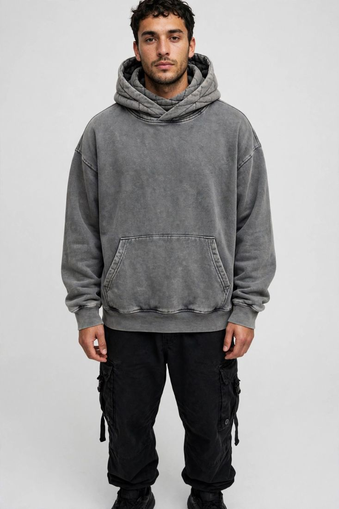

A hoodie is the most forgiving product a new brand can launch — and the most revealing. Customers judge it the moment they pick it up: how heavy it feels, how the hood sits, whether the print cracks after three washes. As a custom hoodie manufacturer in Sialkot, Pakistan, we make heavyweight hoodies, crewnecks, sweatsuits and matching sets for streetwear brands, clubs and merch lines — and the orders that sell out are the ones where the buyer decided fabric, fit and print method before asking for a price.

Before you choose a fabric, decide who is wearing the hoodie and where. A heavyweight streetwear hoodie is a statement piece — thick, structured, worn oversized. A midweight hoodie is an everyday layer, softer and easier to wear under a jacket. A lightweight hoodie suits warmer climates. Each needs a different fabric weight and cut, so "a hoodie" is not a specification. Tell your manufacturer the feeling you want — heavy and boxy, soft and relaxed, or light and clean — and send a photo of a hoodie your customer already loves. That reference does more work than a paragraph of description.
Fabric weight is measured in GSM — grams per square metre — and it is the single most important number in a hoodie order. Our heavyweight hoodies are made at 450–500 GSM: thick brushed fleece that holds its shape, drapes with weight and feels premium the moment it is picked up. Midweight fleece, roughly 300–400 GSM, is softer and more flexible, and suits everyday and all-season hoodies. Below that, lightweight fleece and French terry suit warm weather and layering. Most quality hoodies use a cotton-rich fleece, often blended with a little polyester for stability and to reduce shrinkage. Always confirm the GSM and the blend in writing before sampling — two hoodies that look identical in a photo can feel completely different in the hand, and GSM is the number that tells you which one you are getting.
Fit is the second decision, and it changes everything downstream: fabric consumption, the pattern, the print size and the size run. Oversized and boxy fits — dropped shoulders, a wider body, a shorter length — are the current streetwear standard, but they need a deliberately graded pattern, not simply a larger size. A regular fit suits merch lines and team hoodies, where the customer expects a familiar shape. Cropped and fitted cuts suit women's lines and fashion drops. Whatever you choose, decide it before the sample is cut, and judge the sample on a real person, not on a hanger: check the shoulder drop, the sleeve length, how the hood sits when it is up, and whether the body length works with the bottoms your customer will wear it with. Our streetwear range covers heavyweight hoodies, crewnecks, varsity jackets, tees, cargos and joggers, so a hoodie can be ordered alone or as a matching fleece set.
Customers rarely notice good construction consciously — they notice when it is missing. Specify these details in your tech file or reference notes:
The artwork method decides how your design survives washing, so choose it for durability as well as looks. Puff print gives a raised, textured finish that suits bold streetwear graphics and small chest marks. Embroidery suits logos and text, survives washing better than any print, and reads as premium — the right choice for a chest logo or a small back mark. Standard screen printing suits large, flat graphics and multi-colour designs, while direct-to-garment suits detailed artwork in small runs. Wash effects and garment dyeing change the base fabric itself rather than sitting on top of it, so they never crack or peel. Send artwork as a vector file where possible, and confirm the exact print size and position on the sample, and wash the sample once before approving it — a print that looks perfect fresh off the press and cracks after one wash is a print you do not want on five hundred hoodies.
Hoodies fail more often on sizing than on anything else, because one order has to fit customers of very different builds. Agree the size chart with your manufacturer — chest, body length, sleeve length and shoulder width for each size — rather than assuming retail sizes, which vary between brands and countries. For a first order, ask for one fit sample in your most common size, usually medium or large, and try it on real people: check the shoulder drop, the sleeve length, whether the kangaroo pocket sits where hands actually reach, and whether the hood pulls the neckline when it is worn up. Keep the approved size chart on file — it makes every reorder faster. Remember that heavyweight fleece behaves differently from midweight: the same pattern in 450–500 GSM fabric fits slightly tighter than in a lighter fleece, so sample in the exact fabric you will use for bulk.
MOQ — minimum order quantity — is the smallest production run a factory will make per style. Cutting and machine setup cost the same whether you make 15 pieces or 1,500, so factories set a floor. Our trial MOQ for hoodies is 15–50 pieces, and you can mix sizes within that quantity — so a new brand can launch its first hoodie in a single colourway without buying stock nobody will wear. Start with one colourway and one artwork, confirm the fit and the print, then add colours and reorder. That keeps the risk small and the reorder simple.
A custom hoodie is only a private label product if it carries your brand and nothing else. We make to your design and sew in your own brand labels and size tags, with your packaging as instructed — polybags, stickers, hang tags and custom boxes on request. If you ask for it, we can also add a "Made in [your country]" tag; otherwise our standard "Made in Pakistan" tag is used. Send your label artwork early, together with the design — labels are produced alongside sampling, so they never hold up your bulk order.
Sampling turns your specification into a physical hoodie you can hold, wear and wash. Send a tech file if you have one — measurements, fabric and GSM, construction details and artwork positions. If you don't, a clear photo, your artwork file and a reference hoodie you already own are enough to start. We quote exactly for that piece once we have seen the design — we never quote a sample price blind — then develop the sample in 7–10 working days and share photos for your approval. Put it on, wear it for a day, wash it once, and check the weight, the fit, the print or embroidery, the pocket and the ribbing. Small corrections at this stage are cheap; the same correction after bulk production is not.
Good factories check twice: in-line, while production is running, and again as a final inspection before packing — measurements, stitching, print or embroidery quality, labelling and count. For small orders, one piece from the production run can be sent to you for checking while the rest continues, and any change you ask for is applied to the remaining pieces. You should still receive final quality-check photos before dispatch, so what arrives is what you approved. For larger orders, an independent pre-shipment inspection adds a documented check before the goods leave the factory — see our inspection services.
Plan backwards from the date your hoodies are actually needed. Sampling takes 7–10 working days. Bulk production time depends on the quantity and the embellishment — a straightforward 50-piece run moves faster than a large order with puff print, embroidery and garment dyeing, because each finish adds a step. Add shipping time to North America or Europe by air (DHL/FedEx) or sea. Tell your manufacturer the date the hoodies are actually needed: a real deadline lets the factory plan the run properly.
Before you commit to any hoodie supplier, ask:
A serious factory answers plainly and asks to see your design before quoting — an exact quote is only possible once the piece itself is understood.
You don't need a finished tech pack or a big budget to begin — you need one design, your artwork, and a rough idea of how heavy you want the hoodie to feel. Send us your design, tech file or even a clear photo on WhatsApp at +92-339-5099397 or by email at contact.safettech@gmail.com, and we will reply with an exact quote for that piece and a sampling plan — or use our contact page to request a sample. Your brand's first hoodie can start with as few as 15 pieces.
A hoodie is the piece your customer reaches for every single day, so I never treat it as a basic item. Send me your design and tell me how heavy you want it to feel — I will look at it myself and help you get the fabric, the fit and the print right before we make a single sample.
Ahmed Zahid
Founder & Director, Safe-T TECH International · Sialkot, Pakistan
Send your design today — samples in 7–10 days, trial orders from just 15 pieces.